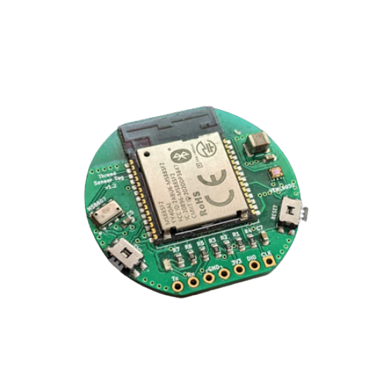

Openthing 1 : ESP-CM3
55 x 40 x 4.7 mm
Openthing 1 ESP-CM3 ist eine leistungsstarke, erschwingliche und zugängliche Alternative zum Raspberry Pi Compute Module 3, die auf dem ESP32-S2-Mikrocontroller basiert. Es verfügt über analoger und digitaler Eingänge sowie Pulsweitenmodulation (PWM)-Ausgänge. Darüber hinaus enthält es 2 GPIO-Expander, die perfekt zu den 45 GPIO-Pins des RPi CM3 passen. Sie sind über I2C verbunden. Der I2C-Kanal kann über Lötpads zwischen I2C-0 und I2C-1 geändert werden.
-
title
content
-
title
content
-
title
kann verschiedene Betriebssysteme ausführen oder direkt auf dem Mikrocontroller benutzerdefinierten Code ausführen
-
title
content
Open Source
Die Hardware des Openthing 1 ESP-CM3 ist vollständig Open Source und OSHWA-zertifiziert. Sie können Dateien wie Schaltpläne, Leiterplattenlayouts, Projektdateien, Software zum Testen des Moduls, Stücklisten usw. in unserem GitHub-Repository finden.
Das Gerät wird ohne Firmware oder Software geliefert. Der Openthing 1 ESP-CM3 kann verschiedene Betriebssysteme wie Zephyr oder Micropython ausführen, die einfach zu verwenden sind. Wir empfehlen Toit als RTOS für das Modul

Order Now